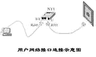
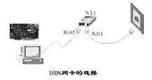
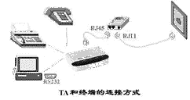
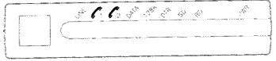
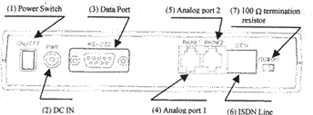

|
|
| 当前位置：电脑报电子版 > 1999 年 > 25 期 > 大众网络 > 走进ISDN |
| 《 走进ISDN 》 |
初识“一线通” 一、 简介“一线通”是窄带综合业务数字网（N－ISDN）的简称，是在现有电话网上开发的一种集语音、数据和图像通信于一体的综合业务。如果用来上Internet，使用“一线通”则更加方便，因为你的计算机得到的服务速率比现在使用的MODEM方式要快得多。目前中国电信使用的大部分交换机都已经数字化，但电信局和用户之间的线路还是传统的模拟信号。“一线通”则将这最后一段模拟线路转换成数字线路，实现了全数字化，这也是ISND又叫“一线通”的原因。 二、安装“一线通” 到电信局申请改装时，服务小姐郑重声明：1.改装后如遇停电，则连电话都不能用，如果这个电话有重要的任务，可能因停电而接不到。2.本局这项业务刚开通，可能出现一些不稳定。在三思后，经不住高速上网的诱惑，还是决定装。 交钱后，过了几天，电信局优惠送了个NT(网络终端，深圳华为生产的T801)，自己购买了一只TA(终端适配器，台湾东宜生产的TA717E)，1640元，加上初装费400元，共两千元出头。安装较为顺利，半小时就通了。 三、初试“一线通” 装好了，迫不及待地拨号，上网。速度真是很快，本地的ISP一个页面数秒便传完。连接到各大网站，也是速度如飞，真乐得我眉飞色舞。浏览网站只能是个粗略的估计，具体快多少还得用下载文件来测试。于是打开GetRight，到本地ISP处选了个大文件开始下载，时间为白天线路较为繁忙时，速度刚开始就达到6K～7K/s，以后慢慢增加，数分钟后一看，吓我一跳，19.2K/s，再看看TA的RD灯，高速闪烁个不停。事后才知道，ISDN这个东西和MODEM不同，下载文件时速度从小到大慢慢增加，如果TA测到通道宽度不够，便自动开启第二通道，自然和33.6K或56K的MODEM不可同日而语。到浙江的zfiles下载一个文件，也能稳定在17K/s左右。但后来到一些站点下载时，发现也有慢的时候，原来速度还不只取决于我的计算机， 还与线路好与不好有关，不是一根“一线通”所能解决的。“一线通”和MODEM一样，速度还取决于线路。不能对“一线通”抱不切实际的希望。 再识“一线通” 目前，电信局提供的“一线通”装机方式分为新装用户、增装用户和改装用户。新装用户就是原来连电话线都没有，新装一根ISDN。增装用户就是在原有电话线的基础上，再加装一根ISDN。改装用户就是将原有的一根电话线改装为ISDN。“一线通”使用统一的多用途用户——网络接口，所有的业务都通过单一的网络接口来提供。 用户端线路和普通模拟电话线路是完全相同的，但是用户设备不再直接与线路连接。所有终端设备都必须通过NT（Net Terminal网络终端）上的两个S/T接口接入网络。通常情况下，用户端设备连接方式如图1所示。图中NT1是网络终端1，完成用户终端信号和线路信号的转换。NT1一般提供一个U接口插槽，两个S/T接口插槽，可以同时连接两台终端设备。U接口采用 RJ11的插头，S/T采用RJ45的插头。注意：大多数的用户终端设备必须通过NT1与用户线路连接，不能直接与用户线路连接。如用户设备口不够，可采用扩展连接端口。 由NT1的S/T接口出来,连入ISDN网卡或TA（Terminal Adapter终端适配器）。两者关系大体上相当于内置式猫和外置式猫。下面对ISDN常见外设作一些简单的介绍： 1.ISDN网卡 ISDN网卡类似于普通计算机连接局域网使用的以太网卡， 安装方法也基本与以太网卡相同。不同的是以太网卡一般直接连接到HUB，而ISDN网卡需要连接到NT1的S/T接口。ISDN网卡 的连接方式如图2所示。 2.终端适配器 计算机接入ISDN的一种重要的方式是通过终端适配器（TA）进行。目前电话网使用的模拟终端设备可以方便地接入ISDN。TA同时具有数据传输和语音信号模数转换的能力。TA的一个重要特点是数据和话音同时进行传输，使用两个通道进行数据传输的过程中，如果用户需要使用电话或者有电话拨入，TA会自动让出一个通道供通话使用，而不必中断数据传输过程。 TA的连接方式如图3所示。一般TA具有与计算机相同的 RS232数据接口，可以直接连接到计算机的串行口。普通电话机和传真机则通过标准RJ11插头连接。 两种方式各有自己的优缺点，ISDN卡价格便宜，但没有电话口，还可能占用计算机资源。外置式TA价格较贵，但有两个电话口。 3.数字电话机 数字电话机是常用的一种ISDN终端。一部电话机使用时一般占用一个B通道（64K/s）。它具有一个LED显示屏，并带有专用的功能键，因而它不仅能提供基本的电话业务，而且还能通过功能键的设置和使用，提供许多方便用户的ISDN补充业务。如主叫号码显示、被叫号码显示、按主叫号码有选择地接通或拒绝呼叫、终端可移动性、子地址功能、多用户号码、用户端到端的信息透明传递（UUS功能，不需被叫摘机）等。数字电话机还可提供振音型选择、话机密码保护功能、自行产生拨号音、故障信息显示等。 有些数字话机还配有RS232、X.21或X.25数据接口，可以兼作ISDN适配器使用。如：AT＆T8820型话机可提供RS232接口，数据口的通信速率为38.4Kbps。 用户选用ISDN设备可采用两种方案：一种是NT1＋ISDN卡＋数字话机，另一种是NT1＋TA。目前ISDN卡价格约为500元～900元，数字话机约1500元，TA也差不多为1600元左右，两种方案价格差不多，只是速率和使用方便程度上略有差异。 “一线通”的安装 “一线通”设备的安装较为简单，和普通的电脑设备没有什么不同。现以笔者的华为NT T801和东宜的TA717E为例，简单介绍如下：一、硬件安装 1.NT安装：华为的NT安装很简单，原包装提供一只45V电源，但也可不用，因本地邮局的交换机完全可带动它。NT的一只U口用来接外线，为RJ11头，另外两只S/T口用来接TA，是RJ45，不过内接的线数不同，要注意不能接错。 2.TA安装：这只TA可以竖放，也可以横放。正面图见图4，背面图见图5。 将从NT的S/T口引出的电缆插入TA的ISDN口，RS232口用附带的电缆连到计算机相应的COM口上，如COM2，普通电话接到PHONE1、2口上，连上电源。接下来，就可以开始进行软件安装了。 二、软件安装 下面以Win95为例，介绍安装的步骤。 第一步:进入“控制面板”,双击“调制解调器”图标。 第二步:单击“增加”按钮,增加新的设备。 第三步: 单击“从磁盘安装”。 第四步:将产品附带的驱动磁盘插入驱动器A,单击“浏览”按钮。 第五步:选择Win95目录,并按“确定”按钮。 第六步: 再次确认,按“确认”按钮。 第七步:从列表中选择需要的连接方式，确认后按“下一步”按钮。 第八步:选择具体的通讯端口,一般是COM2，然后按“下一步”按钮。 第九步:按“完成”按钮(至此ISDN适配器安装基本完成)。 第十步:由于ISDN适配器有多种网络连接方式,故要装多种连接。具体方法同上,回到第八步选择其他连接,并安装。 第十一步:添加其他连接方式。然后安装拨号网络，进行软件的设置，如ISDN的配置，TCP/IP的设定，拨号网络的建立等，这些和普通MODEM一样进行，没有什么特别之处。只是ISDN上网电话和MODEM不同，对应于163和169号码相应的参考号码是143和149，具体请查询ISP。 另外要注意的是Win95的安装必须对端口驱动程序升级,否则无法使ISDN拨号(Win98就省事多了)。为了提高性能，对端口也要设置一下:端口速率选115Kbps,流量控制选硬件。 “一线通”使用感受 使用了一段时间的ISDN后，有以下几点感受：1.连接快速，节约费用 由于ISDN直接用数字信号和电信局的主机通信，所以比MODEM和服务器联接的时间要短得多，一般从拨号到接通不会超过3秒时间，所以在使用过程中，为节约电话费，可在浏览内容多而所有内容已经传至本地机器上时，断开线路，离线仔细阅读、编辑，完成后再接上线路。 2.可按需分配带宽 BOD(Bandwidth－On－Demand)即按需分配带宽，也就是所谓的两个通道的绑定。TA可以自动侦测网络带宽的利用情况，根据网络需求自动增加或断开另一个B通道。当用户在阅读下载主页，或进行少量数据交换时，自动断开第二个B通道；当用户要使用最大带宽，如下载一个较大的文件时，它又能自动将第二个B通道连上。所以可节约通讯费！ (阿 力) |
| 下载本期推荐软件 | 页 首 |
| 《电脑报》版权所有，电脑报网站编辑部设计制作发布 |